Data: Formula 1 World Championship 1950–2024 (Kaggle / Ergast), 14 relational tables
Summary. We built a leakage-safe driver–race table of 24,755 rows (1950–2024), answered the three
data-engineering questions, engineered 38 pre-race features and trained four models.
Split: by season (train ≤ 2019, validation 2020–21, test 2022–24).
Best model: the random forest, chosen on validation. On the unseen test seasons it reaches
PR-AUC 0.714, ROC-AUC 0.938 and F1 0.686, against 0.647 / 0.914 / 0.649 for the rule "the first three
on the grid finish on the podium".
What drives the predictions: starting position and recent performance. Feature importance is not
causation (§7).
DMET904 / CSEN 903 Advanced Computer Lab · German University in Cairo · Winter 2026 · 18 October 2026.
Every number in this report comes from the executed run-all notebook. Section references (§) point to the
notebook.
1. Task, unit of analysis and prediction cutoff
Task. For every driver entering a race, predict whether the driver finishes on the podium
(positionOrder ≤ 3). This is binary classification. The unit of analysis is one driver in one
race, so (raceId, driverId) is unique in the modeling table.
Prediction cutoff: after qualifying, before the start. The grid is fixed and the lights are not yet out.
Information
Status at the cutoff
Allowed (known before the start)
grid slot and pit-lane start; qualifying position; championship
standings after the previous race; form, reliability, ratings and history from previous races; circuit
and calendar facts
Leakage (never a feature)
this race's position / positionText / positionOrder, points, laps, time,
status, fastest lap, pit stops, lap times, and standings after this race
How leakage is prevented in code.
Races are ordered by date, and every history feature is shifted by one race, so the current race is never
included.
Standings are taken from the previous race in the calendar. A season opener uses the previous season's final
table and is flagged.
Time-travel test (§4.5): we recomputed the features for four races after deleting all later races and
blanking each race's own result. 0 of 3,510 values changed.
2. Data audit and cleaning
2.1 Audit of the 14 raw tables (§1)
Keys: every primary key is unique and non-null, and all 23 foreign keys reconcile (no
orphans).
The required grain is violated by 85 driver-race pairs (176 rows), all from shared drives in the
1950s and a few later seasons.
Missing values: the \N sentinel appears in 6 tables, and qualifying.q2/q3 also
contains empty strings. Dates and lap or qualifying times are stored as text in several formats.
Qualifying-coverage drift (Figure 1): qualifying coverage is 0 % of entries before 1994, 88–100 % in
1994–95, only 6–59 % in 1996–2002, and about 100 % from 2003. For most of history the grid is the only record of
the starting order.
grid = 0 on 1,638 rows, never a podium: mostly entries that did not (pre-)qualify, plus a
few genuine pit-lane starts.
The base rate tracks the field size, at about 3 / entrants: 7.7–8.9 % in 1989–91, 15 % in 2022–24.
The Indianapolis 500 (1950–60, 11 races) is 18 % of the 1950–60 rows, and 103 of its 107 drivers never
raced elsewhere.
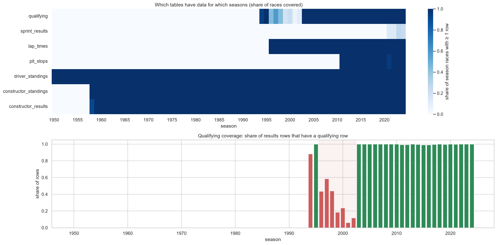
Figure 1. Share of result rows with a matching row in each table, per season. Qualifying exists only
from 1994 and is patchy until 2002 (§1.8.2).
2.2 Cleaning decisions (§2)
Decision
Justification
Strip whitespace; \N and '' → NaN; a column becomes numeric only if every value
parses
Both placeholders exist. The rule avoids silently turning codes such as "R"/"D" into NaN.
Dates → datetime; every duration (race time, gaps, lap and qualifying times such as "1:26.572") → seconds,
with one parser
Several text formats. Verified against the milliseconds column.
Duplicate rule: keep the row where the driver started the car (grid > 0), then the
most laps, then the lowest resultId
Keeps the driver's main drive, judged by how much he
drove, not by how well the car finished. "Most laps" decided 82 of the 85 pairs. The rule agrees with "best
finish" in all 85, so no labels change. 91 rows removed; flags shared_car and
n_cars_driven added.
Exclude the Indy 500 (11 races, 381 rows)
A separate oval competition entered by specialists. It
distorts the home-race and experience features.
Drop entries with no grid slot (did not qualify / pre-qualify, withdrew before the grid): 1,532 rows,
0 podiums
Their outcome is known before the race, so they are not real predictions. Pit-lane starters and
"Withdrew" entries with a grid slot are kept, since dropping them would use post-cutoff
information.
139 status values → finished / mechanical / accident-driver / other
Needed for Q3 and the
reliability features. "Mechanical" means a named car component failed, the brief's definition.
Qualifying: only the impossible lap removed (16:42.6, more than 2× the session best); laps above 107 %
flagged, not deleted
The ratio distribution is continuous up to 1.45×, then one value at 10.2×.
Slow laps are real (wet sessions, car problems).
Team lineage across renames (167 constructor IDs → 112 lineages); nationality → country map
Team
form should not reset at a rename (e.g. Brawn → Mercedes). The country map makes the home-race comparison
possible.
Outliers (1.5 × IQR) checked and kept
The flagged values are real: long circuits (Spa has 97
of the 130 qualifying-time outliers), wet sessions, a 34-car grid in 1953, and zero-inflated points
(Appendix A).
The podium rate rises from 12.7 % to 13.6 %, because only negatives were removed.
The table has 0 duplicate keys and 0 placeholder cells, and every race still has positions 1–3.
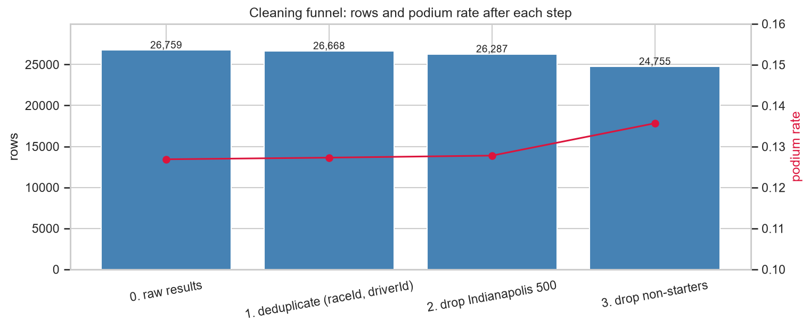
Figure 2. Rows removed at each
cleaning step (§2.13.1).
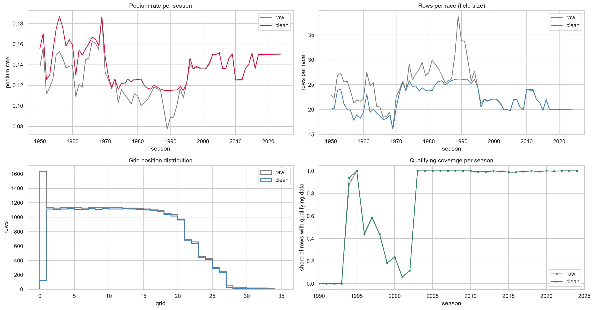
Figure 3. Before vs after cleaning: the
grid = 0 spike disappears and the podium rate per season rises slightly (§2.13).
3. Data-engineering questions
Every answer uses multi-hop joins, and every rate carries a Wilson 95 % confidence interval.
Q1. Which circuits convert a front-row start into a podium most often, and does that change after 2014?
Joins: results ⋈ races ⋈ circuits ⋈ qualifying. Eras: 2003–2013 vs the hybrid era 2014–2024
(qualifying is complete from 2003). A circuit needs at least 10 front-row starts per era.
Answer. Overall, a front-row start (grid P1–P2) converts 68 % → 76 % from 2003–13 to 2014–24
(by qualifying position: 67 % → 74 %).
Top circuits after 2014:Suzuka 89 %, Abu Dhabi 86 %, Monaco 85 %. The lowest is Budapest
(59 %).
The ranking reshuffled: Spearman ρ = 0.21 (p = 0.47) over the 14 circuits with enough data in both eras.
Abu Dhabi went from last to second; Monaco is high in both eras.
Qualifying position vs grid position. The circuit rankings by the two definitions are almost identical
(ρ = 0.91 / 0.84). Where they differ, the grid matters:
front-row qualifiers who started further back after a penalty converted only 22 % / 31 %;
drivers promoted onto the front row converted 56 % / 67 %;
such cases tripled after 2014 (9 → 29), mostly engine-part penalties.
Grain / missingness / cutoff. One front-row starter per race (2 per race, 428 races). Qualifying is missing
for 0.3 % of these rows. Grid and qualifying are both known before the start.
Caveat: per-circuit intervals are ±15–25 points, so the robust findings are the overall rise and the
reshuffle.
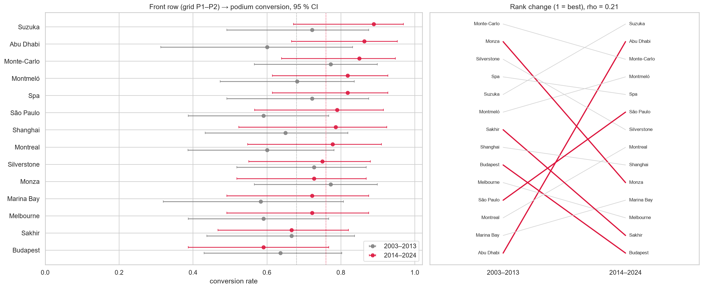
Figure 4. Front-row
conversion rate per circuit, before vs after 2014, with Wilson 95 % CIs (§3.1).
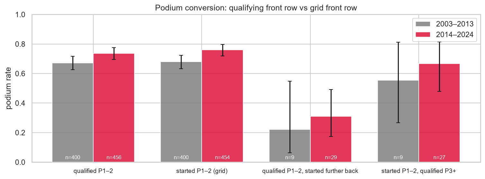
Figure 5. Grid vs qualifying
definition of "front row", including penalised and promoted drivers (§3.1).
Q2. Do drivers finish on the podium more often at home, controlling for starting position?
Raw comparison (confounded): home 11.9 % vs away 13.8 %. Home drivers start further back on average
(grid 12.7 vs 11.7).
Within the same grid band: Mantel–Haenszel odds ratio 0.95 [0.80–1.13], 10,000-permutation
p = 0.56.
Training seasons only (2003–2019): OR 0.71 [0.45–1.12], p = 0.13.
Grain / missingness / cutoff. One starter with a grid slot per race. Driver and circuit country are complete
after the mapping (0 missing). "Home" and grid are both known before the start.
Limitation: with only 20 home pole starts in 2003–19, a small effect cannot be ruled out.
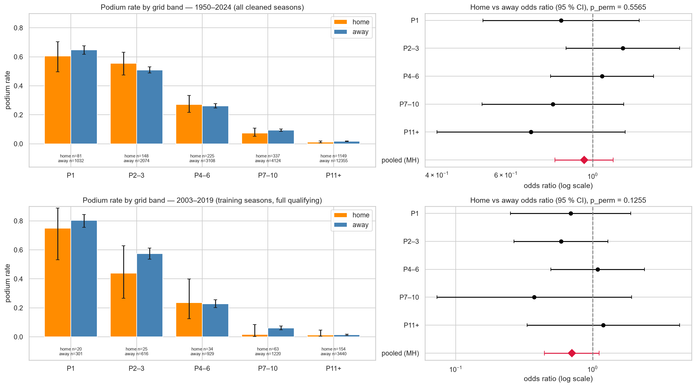
Figure 6. Home vs away
podium rate within grid bands, with the stratified odds ratio (§3.2).
Q3. Which constructors have the highest mechanical-retirement rate, 2014–2021 vs 2022–2024?
Joins: results ⋈ status ⋈ constructors (team lineage) ⋈ races. Mechanical = a car component failed;
crashes, driver errors and regulation decisions are excluded. A team needs at least 40 starts per era.
Answer. Mechanical failures ended 9.9 % of starts in 2014–21 and 6.1 % in 2022–24
(χ² p ≈ 5·10⁻⁵).
2014–21: highest were Alpine lineage (Lotus F1 / Renault) 15.0 %, RB lineage (Toro Rosso /
AlphaTauri) 14.7 %, McLaren 14.4 %. Mercedes was lowest at 4.1 %.
2022–24: highest were Alpine 11.0 %, Sauber 8.8 %, RB and Ferrari 6.6 %. McLaren and Red
Bull were lowest at 3.7 %.
Alpine is the least reliable team in both eras; McLaren, RB and Red Bull improved most.
Robustness: a strict definition (without tyre / wheel / wing statuses) gives the same ranking (ρ = 0.97 /
1.00).
Grain / missingness / cutoff. One race start per row (4,623 starts), status complete. Status is post-race
information, used here descriptively only. Past reliability is a feature; the current race's status never is.
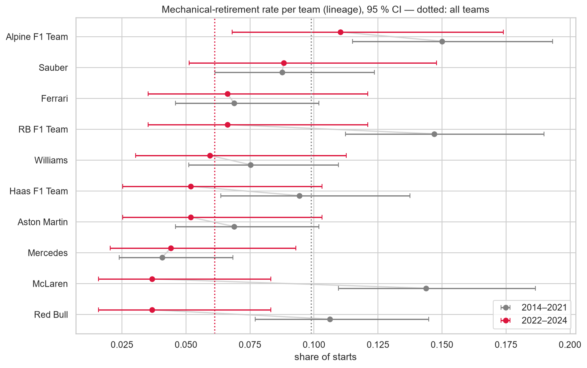
Figure 7. Mechanical-retirement rate per team lineage, 2014–21 vs 2022–24, with Wilson 95 % CIs (§3.3).
4. Selected features and why each is valid at the pre-race cutoff
38 numeric features in 10 groups.
"Past" always means races that finished before this one (date-ordered, current race excluded).
Form uses an exponentially weighted mean with a half-life of 5 races. It beat fixed windows of 3, 5 and
10 races on all six form features (§4.2).
Group
Feature(s)
Meaning
Why it is known before the start
Grid
grid_f, pit_lane_start
starting slot (pit lane = behind the last slot); pit-lane flag
the grid is fixed before the lights go out
Qualifying
quali_pos_d, grid_penalty_d, quali_source
qualifying position (derived from the grid where no qualifying row exists); grid − qualifying (penalties); 1 = derived
qualifying ends before the race; penalties are applied to the grid
rank of the driver's form / Elo among today's starters
ranks of pre-race features within the known starting field
Race context
strong_cars_ahead
how many of the field's 3 highest-Elo drivers start ahead on the grid
grid + pre-race Elo
Race context
circuit_grid_prior, circuit_overtaking
past podium rate of this grid slot at this circuit (shrunk towards the overall slot rate); past mean |grid − finish| at the circuit
previous races only
Era
field_size, season, years_since_reg_change
number of starters; season; years since the last major rules change
calendar and entry list are known when the grid is set
Encoding. All 38 features are numeric (positions, counts, rates, ranks, ratings, 0/1 flags), so no label or
one-hot encoding is needed. Categorical sources (driver, team, circuit, nationality, status) become the pre-race
summaries above. We avoided identity columns for three reasons:
they would let the models memorise names instead of learning signals that carry over to new seasons;
teams that are new in the test seasons would have no column;
they would add about 1,000 sparse columns.
Evidence (training seasons only).
Strongest single features: qualifying position, grid, circuit grid prior, form, standings and Elo
(ROC-AUC 0.89–0.91).
No single feature exceeds 0.91, so there is no leakage signal.
Weak features (ROC-AUC 0.50–0.59) are kept as modifiers.
Tested and rejected:
past pit-stop performance: PR-AUC −0.024;
qualifying lap-time gaps on top of position: −0.0002 / −0.0037, CIs include 0;
sprint results: no sprint weekends in training, and already reflected in the grid (2021–22) and the
standings;
near-duplicates: ρ = 0.99;
home_race: no effect in Q2 and no gain in the ablation.
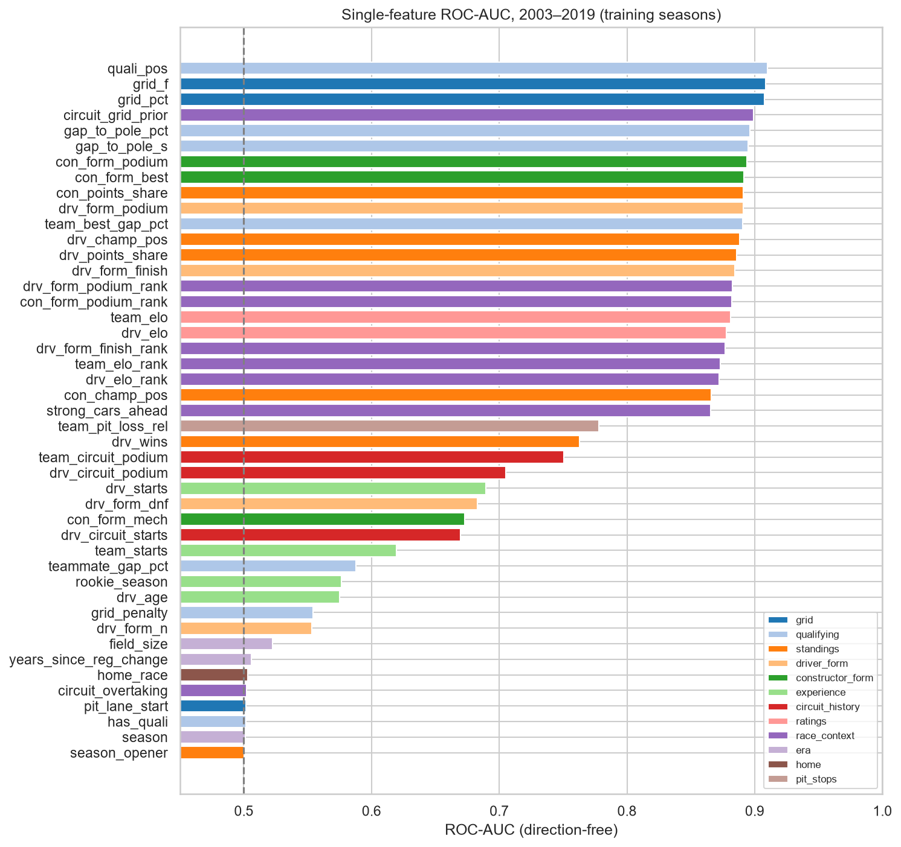
Figure 8. Single-feature ROC-AUC on the
training seasons 2003–19 (§4.6).
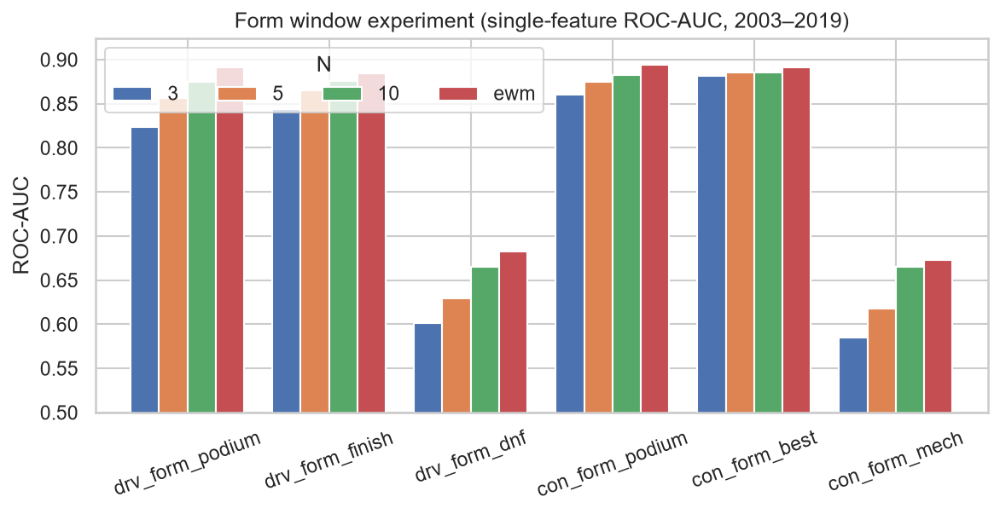
Figure 9. Form-window
experiment: N = 3 / 5 / 10 vs exponential weighting (§4.2).
5. Split, training data and preprocessing
Split
Seasons
Races
Rows
Podium rate
Role
Train
1950–2019
1,007
22,618
13.4 %
fit models (recency-weighted)
Validation
2020–2021
39
780
15.0 %
every choice: hyperparameters, threshold, preprocessing
Test
2022–2024
68
1,357
15.0 %
scored once at the end (new rules era)
Why split by season? Deployment predicts future races from past ones. Rows of one race share conditions,
so a random split would mix the same race across splits. A random-row split showed no inflation (0.620 vs 0.634),
consistent with leakage-safe features.
Training window: all seasons are kept, with recency weights 0.5^((2019 − season)/5). They beat
2003–19-only training (validation PR-AUC ≈ 0.72 vs 0.70).
Qualifying for the early seasons: qualifying position is derived from the grid where no qualifying row
exists. This is exact for 98.2 % of 1994–2002 drivers, and every derived value is flagged.
(A) Fitting the imputer and scaler on all rows vs training rows only changed PR-AUC by −0.001 (CI
includes 0). But the evaluation seasons moved the training means by up to 15 %, so the preprocessing is fitted on
training rows only, inside each pipeline.
(B) A circuit grid prior computed from all seasons, including the podiums being predicted, gave
+0.035 for logistic regression (CI [+0.006, +0.060]). This is target leakage that inflates the score, so the
prior uses past races only.
(C) Missing-value handling: median + flags for LR / NN; native NaN for the trees (0.726 vs 0.710 for
imputed boosting).
Missing values. They are "no history yet" (debuts, first visits, the seasons before the constructors'
championship existed). The rows are kept: missingness itself is informative (debut podium rate 2.5 % vs 13.8 %), and
dropping the incomplete training rows changed PR-AUC by +0.0007 (CI [−0.018, +0.021]).
Figure 11. Effect of median
filling and scaling on four features. Test rows keep their drift, e.g. team_starts at +1.95 SD
(§5.7.1).
6. Models and evaluation
6.1 Models (same table, same 38 features, same rows)
Logistic regression (baseline): a weighted sum of the scaled features through a sigmoid, with an L2
penalty. Simple and stable; additive in the log-odds.
Random forest: 300 decision trees on bootstrap samples, with random feature subsets at each split; their
votes are averaged. Captures thresholds and interactions; handles NaN natively.
Gradient boosting (HistGradientBoostingClassifier): small trees added one after another,
each correcting the remaining error. Usually the strongest tree model on tables.
Shallow neural network (Keras): 1–2 hidden ReLU layers and a sigmoid output, trained with Adam on
binary cross-entropy, with early stopping on validation PR-AUC.
6.2 Metrics
Primary: PR-AUC. Podiums are rare (15 %), and PR-AUC measures how well the podium finishers are ranked
at the top. No skill scores 0.15.
Why not ROC-AUC? It rewards ranking the easy back-of-grid cases: the one-feature grid rule already
reaches 0.91.
Secondary: F1 at the threshold that maximises F1 on validation, because a podium call is a yes/no
decision.
Also reported: ROC-AUC, precision, recall, accuracy and the top-3 hit rate (the share of each race's three
highest-scored drivers who actually finished on the podium).
Accuracy is not used for decisions. "Always no podium" is already 85 % accurate.
6.3 Three modeling attempts (validation PR-AUC)
Attempt
LR
RF
GB
NN
Finding
1 · Library defaults
0.718
0.670
0.696
0.724
default RF and GB memorise the data (train 2015–19 PR-AUC = 1.000)
regularising the trees is the only significant gain: RF +0.075 [+0.035, +0.100], GB +0.046 [+0.007, +0.077]
3 · Race-wise normalisation / ensemble
0.704
0.724
0.712
0.724
rejected: −0.014 to −0.030; ensemble 0.739 < RF
Chosen settings:
LR: C = 0.003.
RF: max depth 6, at least 50 rows per leaf.
GB: learning rate 0.03, 8 leaves, at least 100 rows per leaf, 100 trees.
NN: one layer of 16 units, with class weights.
Thresholds (max F1 on validation, frozen): 0.32 / 0.34 / 0.36 / 0.79.
Early stopping: without it, the NN's train − validation gap doubles (0.048 → 0.101) and validation PR-AUC
falls from 0.738 to 0.722 (Figure 15).
6.4 Results on train, validation and the unseen test set
Model
Split
ROC-AUC
PR-AUC
F1
Precision
Recall
Accuracy
Top-3 hit
Logistic regression
train
0.899
0.566
0.556
0.564
0.548
0.882
0.550
validation
0.927
0.723
0.700
0.692
0.709
0.909
0.692
test
0.935
0.707
0.667
0.606
0.740
0.889
0.637
Random forest (selected)
train
0.905
0.600
0.589
0.556
0.626
0.882
0.567
validation
0.931
0.745
0.716
0.690
0.744
0.912
0.701
test
0.938
0.714
0.686
0.622
0.765
0.895
0.642
Gradient boosting
train
0.904
0.593
0.579
0.566
0.592
0.884
0.561
validation
0.933
0.742
0.709
0.709
0.709
0.913
0.684
test
0.938
0.718
0.677
0.643
0.716
0.898
0.642
Neural network
train
0.885
0.456
0.552
0.470
0.667
0.854
0.531
validation
0.927
0.738
0.708
0.734
0.684
0.915
0.701
test
0.934
0.694
0.624
0.630
0.618
0.888
0.632
Grid rule (P1–P3)
test
0.914
0.647
0.649
0.650
0.647
0.895
0.652
Always "no podium"
test
0.500
0.150
0.000
0.000
0.000
0.850
0.150
Train = all 1950–2019 rows, unweighted. These scores are lower than
validation because early eras are harder to predict. The overfitting check (train 2015–19 vs validation) is in
§6.7 of the notebook.
Every model beats the grid rule on PR-AUC: RF +0.067 [+0.023, +0.107], GB +0.070, LR +0.059; the NN
only just (+0.046 [−0.001, +0.090]).
No model beats logistic regression significantly (CIs include 0). The signal is mostly monotone and
additive.
Picking exactly 3 per race, the models match the grid rule rather than beat it (top-3 hit rate −0.010 to
−0.020, CIs include 0). The value is calibrated confidence across races.
Hardest season: 2024. LR and the NN fall below the grid rule after McLaren's mid-season rise.
Calibration: LR, RF and GB are well calibrated (Brier 0.069–0.072). The class-weighted NN over-predicts
(0.100).
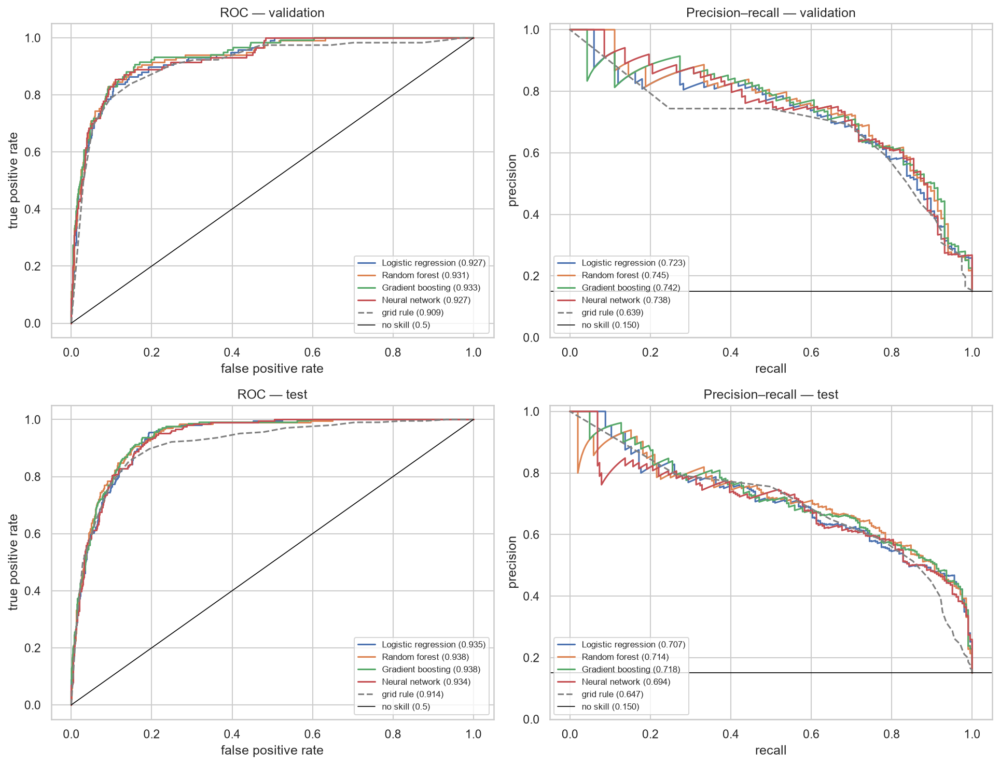
Figure 12. ROC and precision–recall
curves, validation and test, against the grid rule and no skill (§6.7).
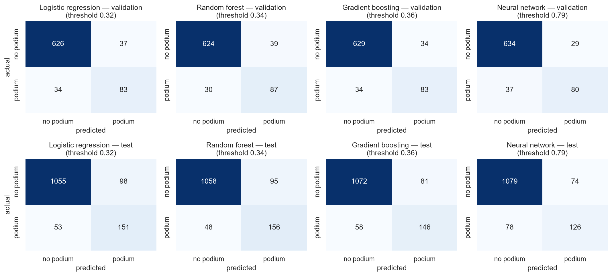
Figure 13. Confusion matrices at the
frozen validation thresholds (§6.7).
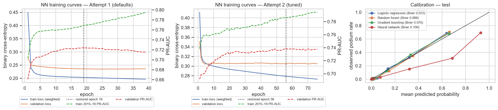
Figure 14. NN training curves
(loss and exact PR-AUC per epoch) and calibration on test (§6.7).
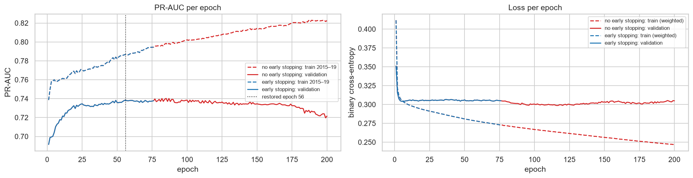
Figure 15. The same NN with vs
without early stopping (§6.4.1).
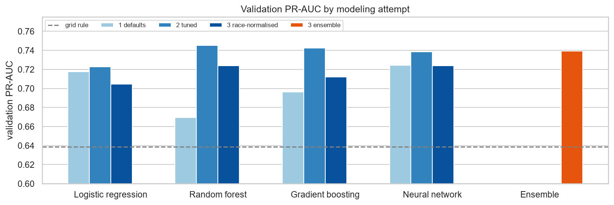
Figure 16. Validation PR-AUC per
modeling attempt and model (§6.5).
6.5 Limitations of each model
LR: additive in the log-odds; the correlated features (standings, form, Elo) need strong shrinkage, so
individual coefficients are unstable; it extrapolates linearly beyond the training range.
RF: memorises unless the trees are kept shallow; cannot extrapolate beyond training values
(season, team_starts); its built-in importances are biased, which is why we use
permutation importance and SHAP.
GB: sensitive to the number of trees, chosen on only 39 races from 224 configurations; same extrapolation
limit as the RF.
NN: least stable across settings and seeds; uses validation twice (early stopping and configuration),
with the largest validation → test drop; miscalibrated by class weights; a black box.
7. Feature-group ablation and explainability
7.1 Feature-group ablation (§7.1)
Each variant is refitted with the frozen settings, without one group (or with only one group).
No single group is essential: every change in RF PR-AUC is under ±0.012, and almost every CI includes
0. The groups overlap; for example, starting position is also encoded in circuit_grid_prior.
Removing whole blocks costs more: grid + qualifying together −0.016 on validation; all past-performance
groups −0.013.
Race context alone (8 features) matches all 38: test 0.715 vs 0.714.
Circuit history hurts on test: +0.011 [+0.001, +0.022] without it. It does not carry over into the
2022 rules era. The model was not changed, because the test set must not drive feature selection.
home_race adds nothing (−0.001 / −0.003).
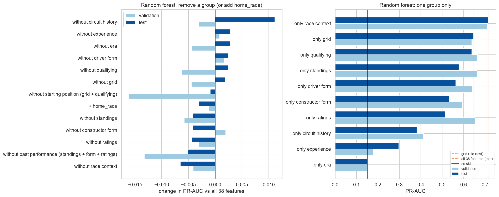
Figure 17. Random forest: remove
a group (left) or use one group only (right), validation and test (§7.1).
7.2 Global explanations: permutation importance and SHAP (§7.2–7.3)
Permutation importance on the test seasons: the RF relies on circuit_grid_prior (−0.027
PR-AUC when shuffled), grid_f (−0.021) and quali_pos_d (−0.013). Every other feature
costs under 0.003, because a substitute carries its information.
Grouped permutation: race context 0.067 > standings 0.027 > grid 0.019 > qualifying 0.009.
Shuffling a whole group is needed because correlated features split their importance.
SHAP (exact TreeExplainer; additivity error about 1e-15, also on rows with NaN): share of the total effect
— race context 29 %, standings 19 %, grid 13 %, driver form 13 %, qualifying 12 %, constructor form 8 %, ratings 4 %.
The grid effect is a step: P1–P3 add +0.08 to +0.11 to the probability, P4 about +0.035, P5 and further
back −0.02 to −0.05.
The out-of-range features (season, team_starts) contribute under 0.01.
Logistic-regression coefficients (the intrinsically interpretable model): circuit_grid_prior
+0.26, strong_cars_ahead −0.20, grid −0.16, qualifying −0.16 log-odds per SD. Every sign makes racing
sense, and the ranking agrees with RF SHAP (Spearman ρ = 0.88).
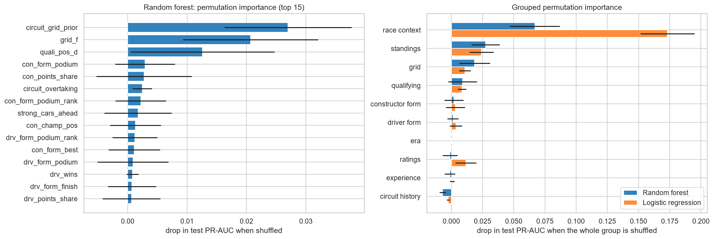
Figure 18. Permutation
importance: top 15 features and grouped, RF vs LR (§7.2).
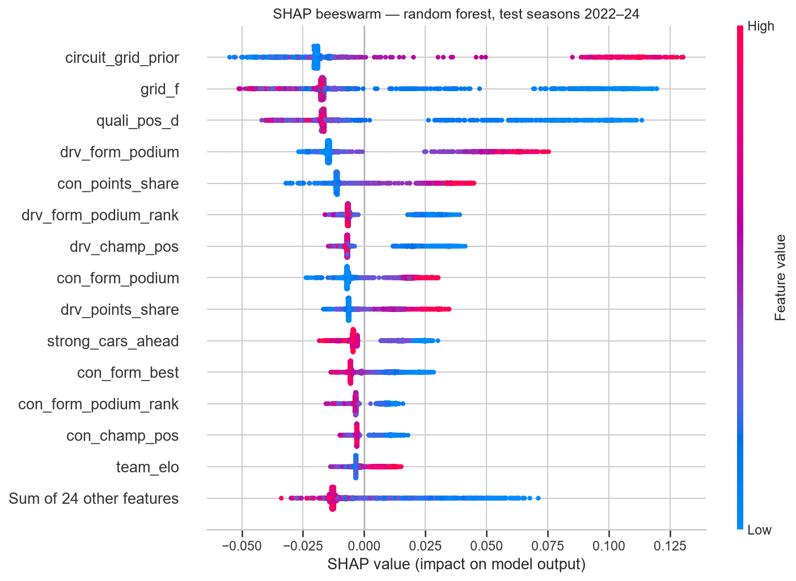
Figure 19. SHAP beeswarm, random forest,
test seasons 2022–24 (§7.3).
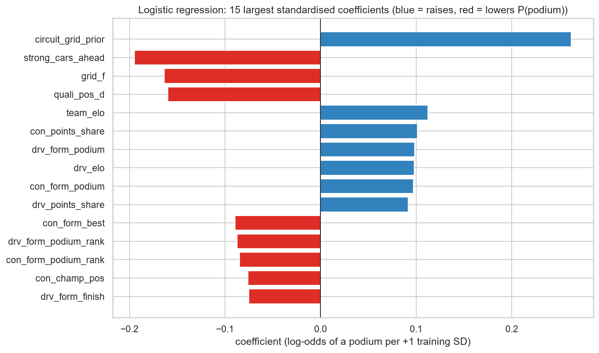
Figure 20. Logistic
regression: 15 largest standardised coefficients (§7.3.1).
7.3 Local explanation: one driver in one race (§7.4)
Row chosen by a fixed rule: the highest-probability test driver who started P4 or lower and did finish on
the podium. That is Max Verstappen, 2024 British GP, who started P4 and finished P2. The model gave him
p = 0.544, a podium call; the grid rule would have missed him.
SHAP waterfall, from the average 0.141: recent podium form +0.07, the historical podium rate of P4 at
Silverstone +0.04, team leading the constructors' championship +0.03, himself leading the drivers' championship
+0.03.
LIME (local fit R² 0.77) agrees on 9 of the top 10 features, all with the same direction.
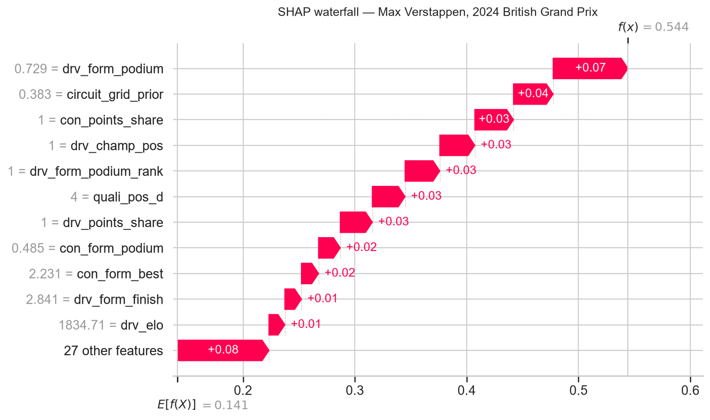
Figure 21. SHAP waterfall for the
selected prediction (§7.4).
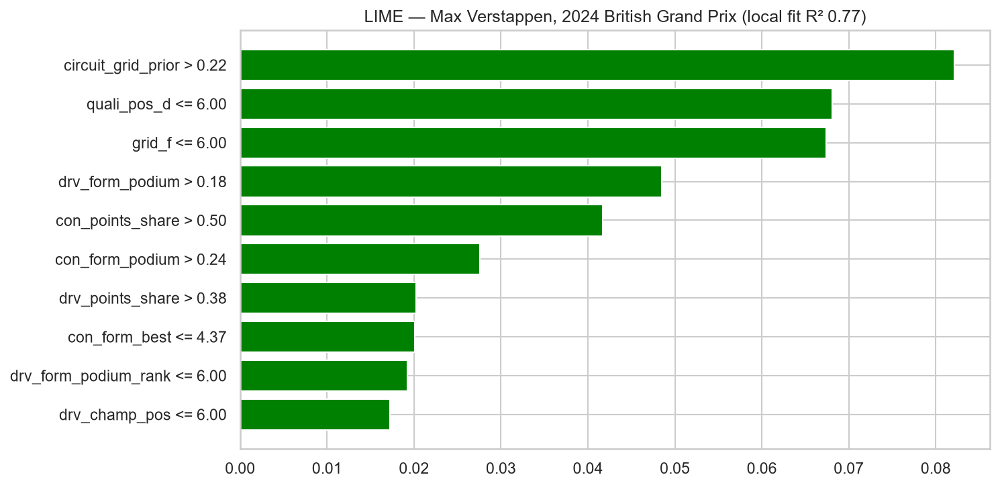
Figure 22. LIME explanation of the same
prediction (§7.4).
Importance is not causation. These methods explain the model, not Formula 1. A feature being
important means the model relies on it to predict, not that it causes podium finishes.
Proxies: team Elo and points stand in for car speed, which the dataset does not measure. Raising a
team's Elo would not make its car faster.
Shared credit: correlated position features split the credit arbitrarily.
Common cause: a good grid slot and a podium both come from the same fast car and driver.
Limited range: beyond the training range, the trees only repeat their last value.
Fairness.
No identity or nationality feature is used, and home_race was tested and dropped.
Age carries 0.3 % of the SHAP weight.
Rookies receive low probabilities because they have no history, not because of who they are.
The model inherits F1's dependence on established top teams, so it recognises a rising team only after its
results arrive.
8. Inference function
predict_podium(record, model='RF') scores one driver in one race with the frozen models.
Input:grid_f is required; every other feature may be missing.
Missing values are handled exactly as in training: native NaN for the trees, training median + flag for
LR / NN.
Output: the probability; the podium call at the frozen threshold; the missing features; a warning for gaps
never seen in training (20 of the 38 features are never missing there); out-of-range values; the top 3 SHAP
reasons.
Record
LR
RF
GB
NN
Actual / note
Complete: Norris, pole, 2024 Abu Dhabi GP
0.690
0.727
0.744
0.960
won the race; all four call a podium
Natural gaps: Doohan's debut, P17 (6 features missing)
0.020
0.007
0.013
0.000
finished P15; no warning (debut gaps are seen in training)
Norris without qualifying
0.638
0.617
0.624
0.904
warning: qualifying is never missing in training
… also without driver form and circuit history
0.560
0.577
0.462
0.978
degrades gradually; the NN is erratic
Grid slot only
0.036
0.166
0.213
0.439
warning: 19 never-seen gaps, so fall back to the grid rule
9. Known limitations
Qualifying-coverage drift. Before 1994 there is no qualifying data. The qualifying position is derived
from the grid, assuming grid = qualifying order. That assumption is verified only for 1994–2002 (98.2 % exact).
There are no lap times before 1994.
Era sensitivity.
The base rate (about 3 / field size), reliability (39–49 % of entries finished before 2000, 80–86 % in the
2010s–20s) and field size all changed strongly over time.
The test seasons are a new rules era (2022 ground-effect cars).
Circuit history does not carry over into that era (§7.1).
season and team_starts take values beyond the training range, which the trees cap.
The models lag mid-season swings in form (2024).
Small evaluation sets. Validation has 39 races, so many differences are within bootstrap noise, and the
tuned validation scores are optimistic. The per-circuit (Q1) and per-team (Q3) rates have wide CIs.
Picking three per race. The models are not better than the grid at naming the three podium finishers;
their value is calibrated confidence across races.
Missing information. There is no weather, tyre or practice-pace data, and retirements and safety cars
cannot be foreseen.
Source inconsistencies kept as recorded. 100 races have repeated grid values (only 4 since 2000), there
are 11 race-time / gap mismatches, and one row has more laps than the winner.
Definitions. Nationality is not the same as upbringing, and the status mapping records what
failed, not why. The strict-definition check shows that Q3 is robust to this.
10. Conclusion
Careful cleaning and leakage control, verified by a time-travel test, produced a pre-race table on which every
model clearly beats the obvious grid rule at ranking podium contenders. The selected random forest reaches a test
PR-AUC of 0.714 and F1 of 0.686.
The gain comes from combining starting position with recent performance into well-calibrated probabilities, not
from better picking of the three finishers. A simple logistic regression is statistically as good, which shows the
signal is mostly additive.
Home advantage is absent once the grid is controlled for. Front-row conversion rose in the hybrid era, and
mechanical reliability improved markedly after 2022.
Appendix A. All remaining figures
Every plot of the notebook appears either in the main text (Figures 1–22) or here. Section numbers
refer to the notebook.
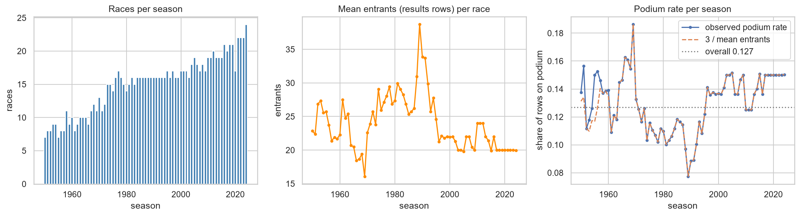
A1. Races per season, field
size and podium rate (§1.8.1).
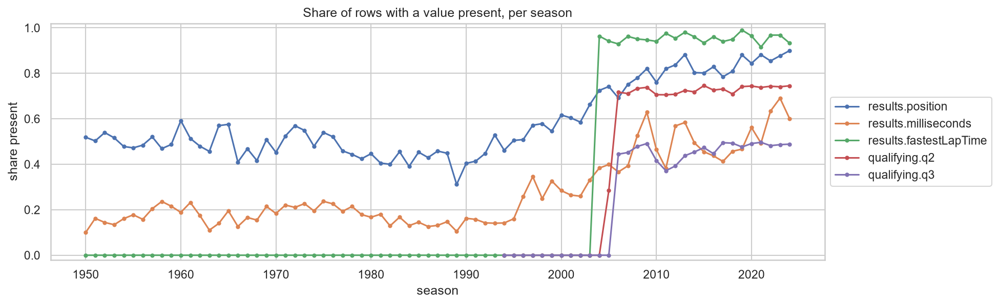
A2. Share of rows with a value present
per season, for key results and qualifying columns (§1.8.2).
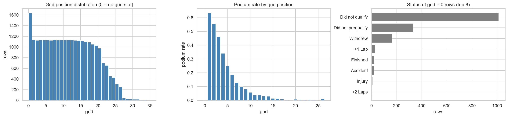
A3. Grid distribution
and podium rate by grid slot, including grid = 0 (§1.8.3).
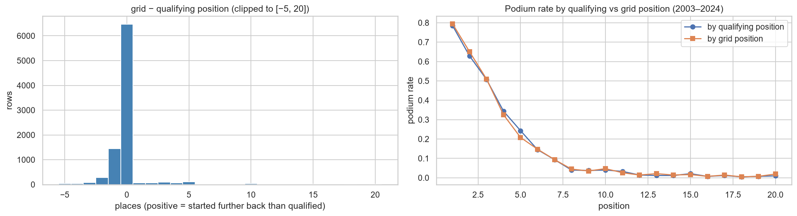
A4. Qualifying vs grid position,
2003–24 (§1.8.4).
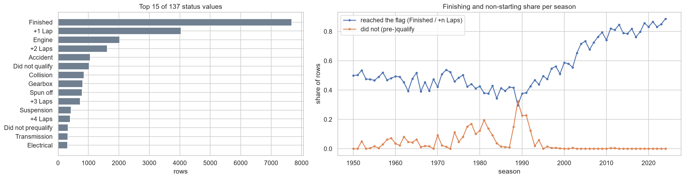
A5. Race status over time:
reliability and non-starters (§1.8.5).
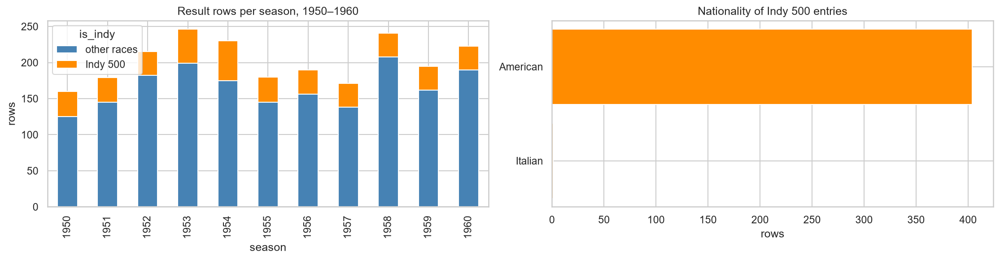
A6. The Indianapolis 500 in the
championship, 1950–60 (§1.8.6).
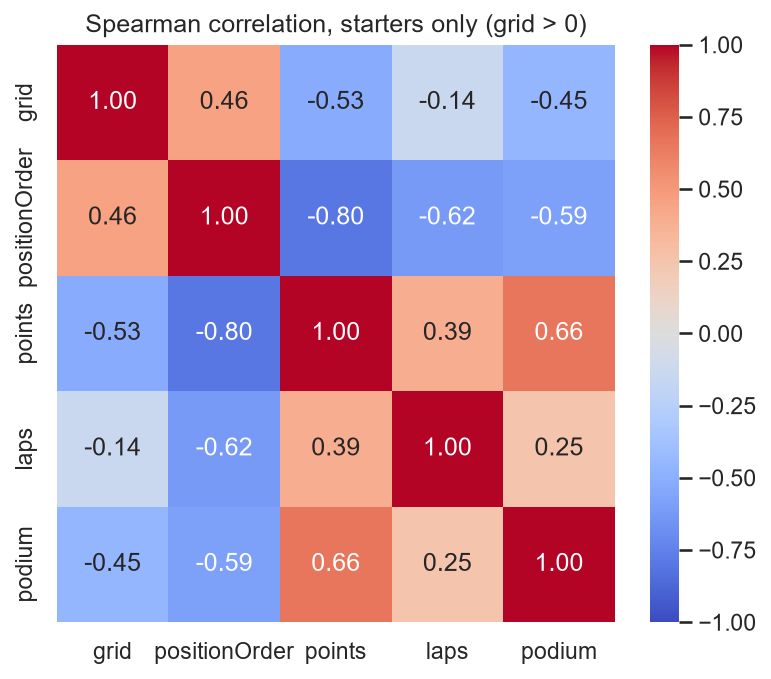
A7. Correlation of the numeric
results columns (§1.8.8).
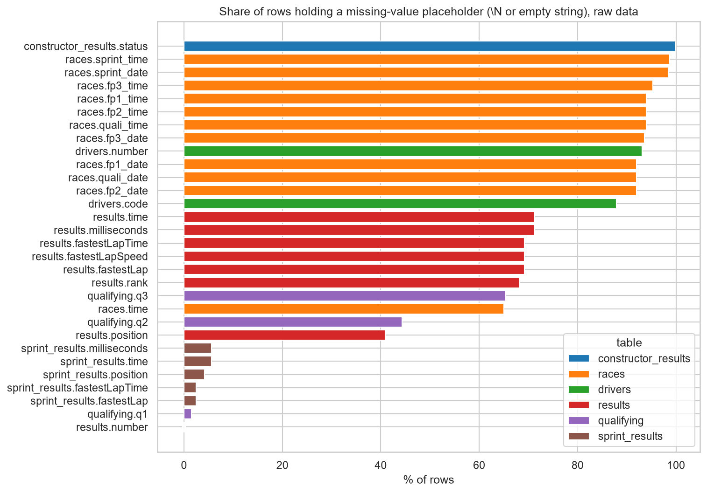
A8. Missing values by column, raw
data (§1.4).
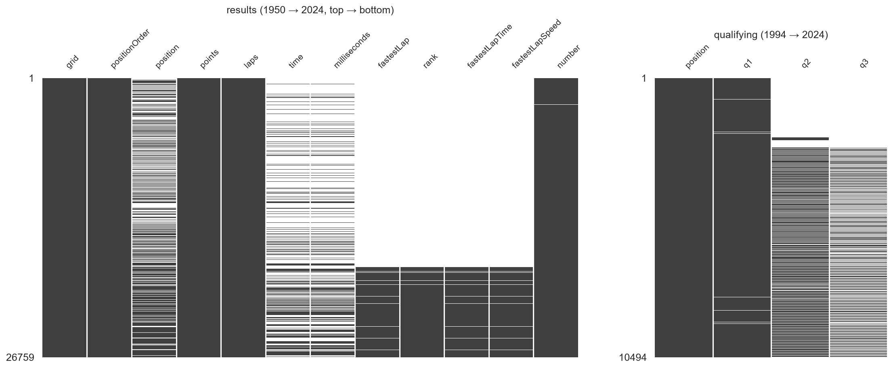
A9. Missingness pattern
(missingno) in results and qualifying (§1.4).
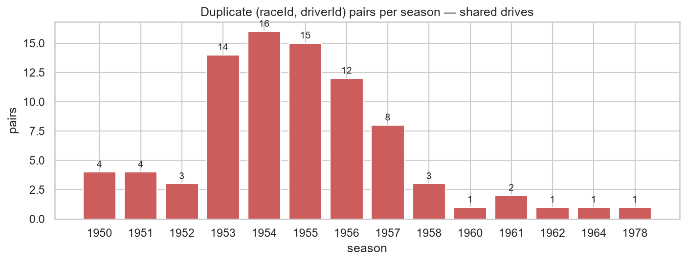
A10. Duplicate
(raceId, driverId) pairs by season: shared drives (§1.7).
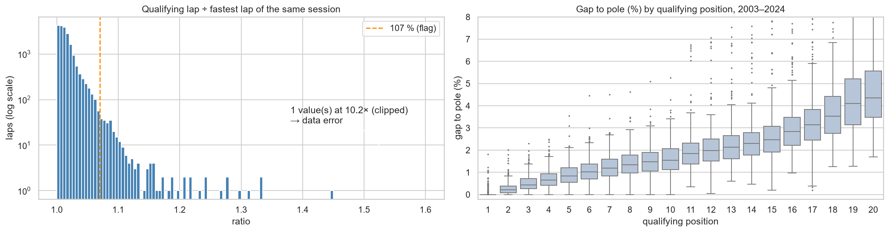
A11. Qualifying lap
ratio to the session best and gap to pole: the error threshold (§2.8).
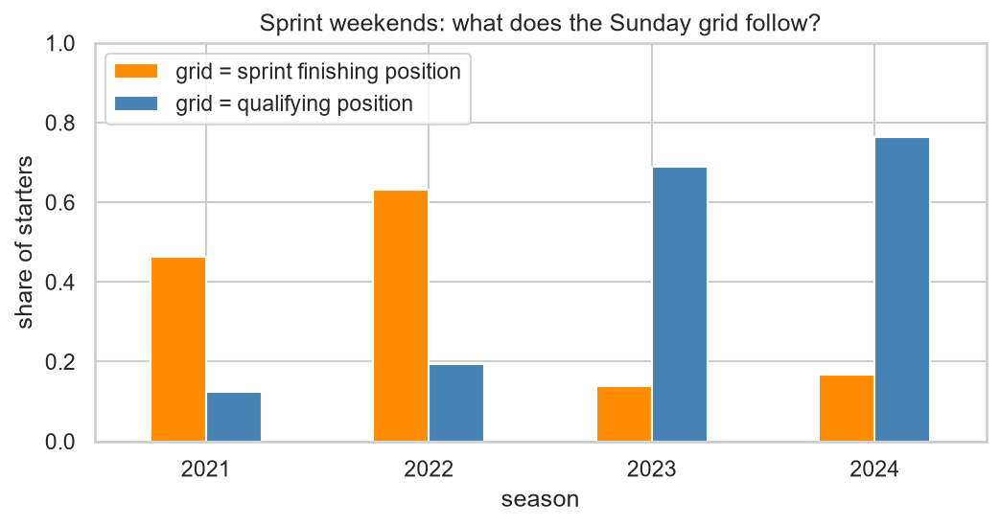
A12. Sprint weekends 2021–24: does
the Sunday grid follow the sprint result or qualifying? (§2.9)
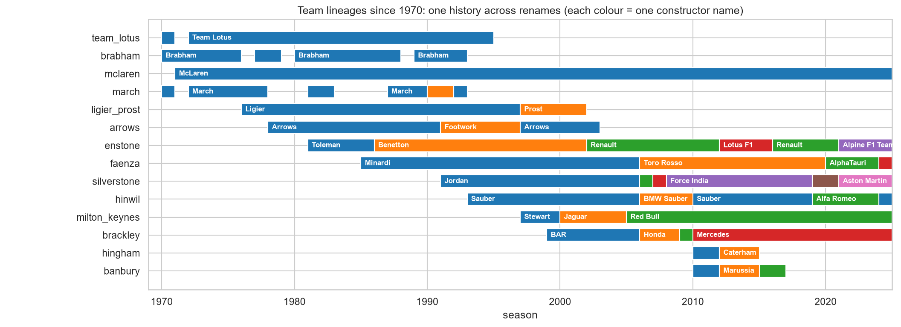
A13. Team lineages across constructor
renames (§2.10).
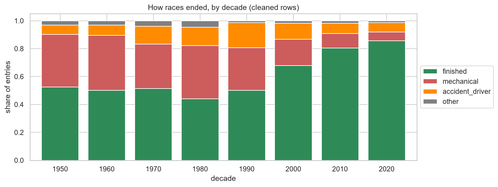
A14. How races ended, by
decade, after cleaning (§2.13.3).
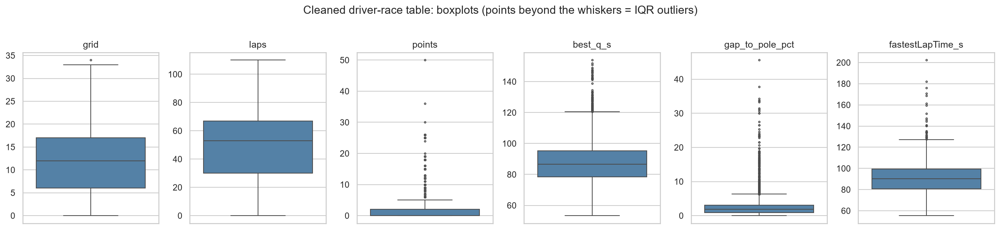
A15. IQR outlier check of the
cleaned numeric columns; all values kept (§2.13.4).
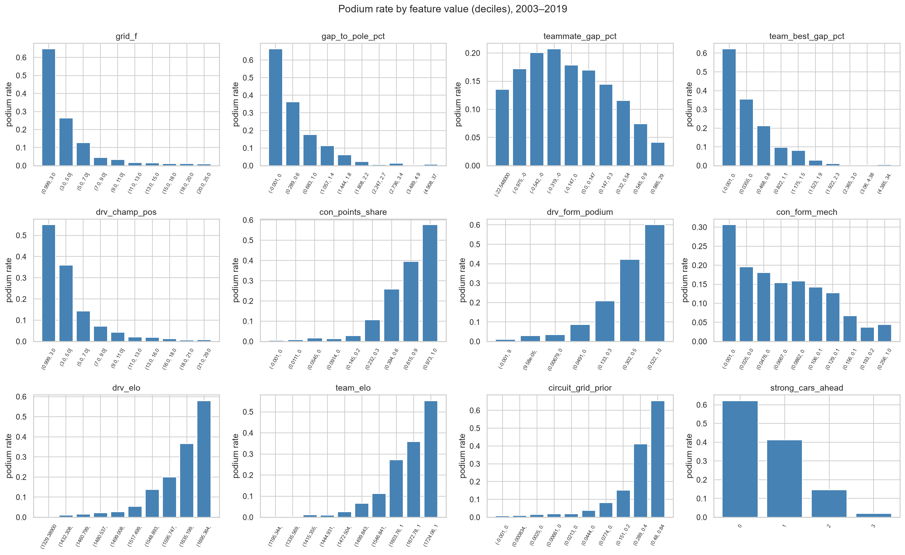
A16. Podium rate by feature value
for the main features (§4.6).
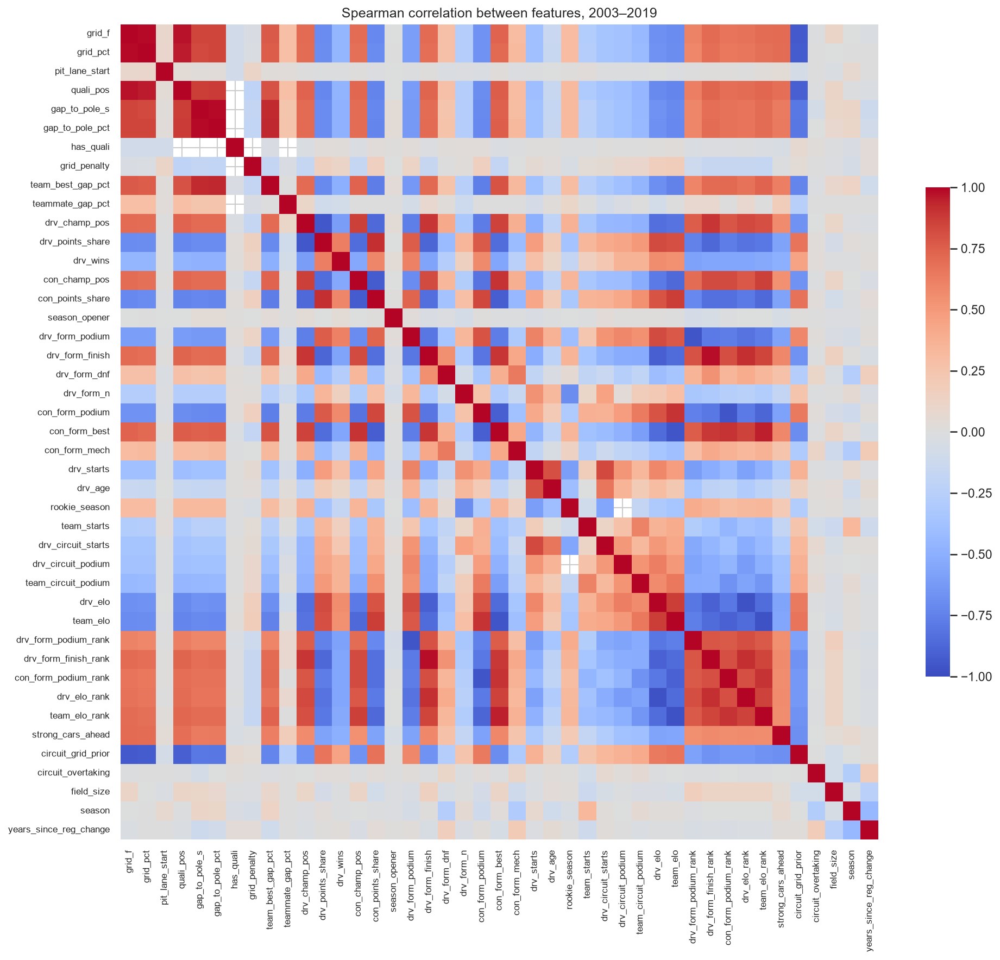
A17. Correlation between candidate
features (§4.6).
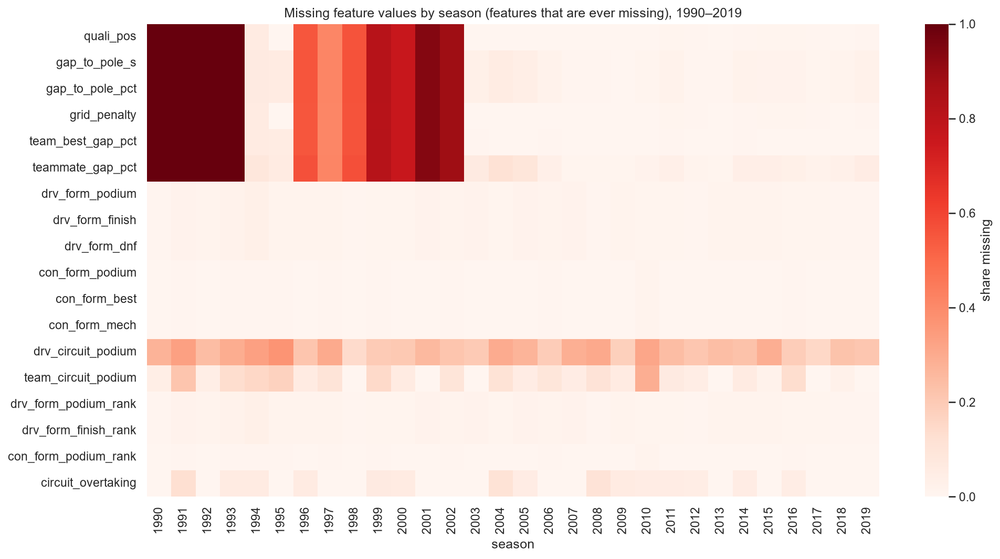
A18. Feature missingness by season
(§4.6).
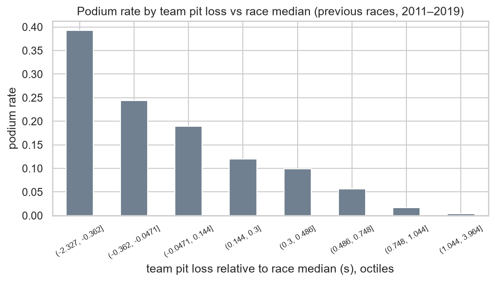
A19. Pit-stop candidate feature: tested
and rejected (§4.4).
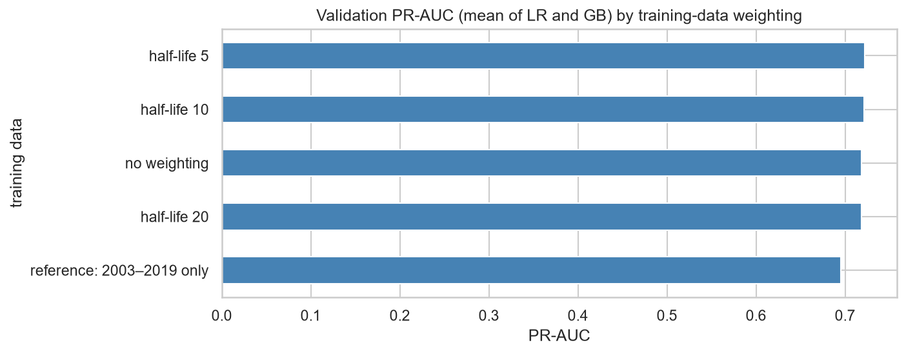
A20. Recency-weighting experiment
(§5.4).
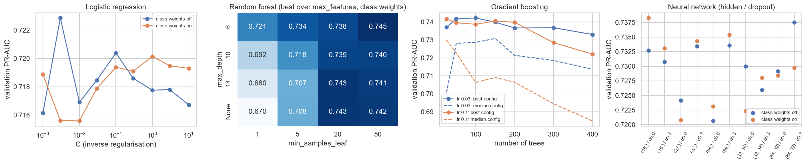
A21. Hyperparameter tuning on validation, all
four models (§6.4).
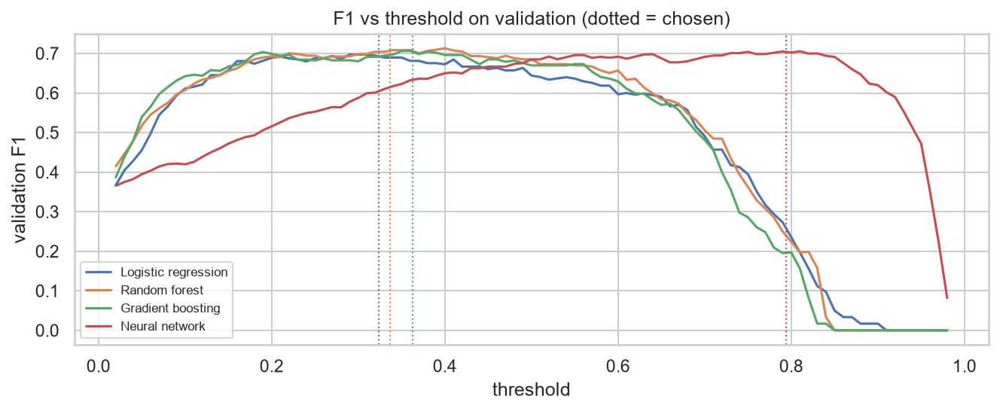
A22. Validation F1 vs threshold; the chosen
thresholds are dotted (§6.6).
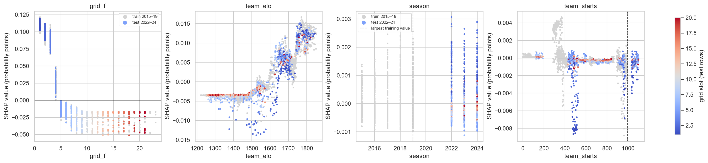
A23. SHAP dependence of
grid, team Elo, season and team starts; training vs test rows (§7.3).